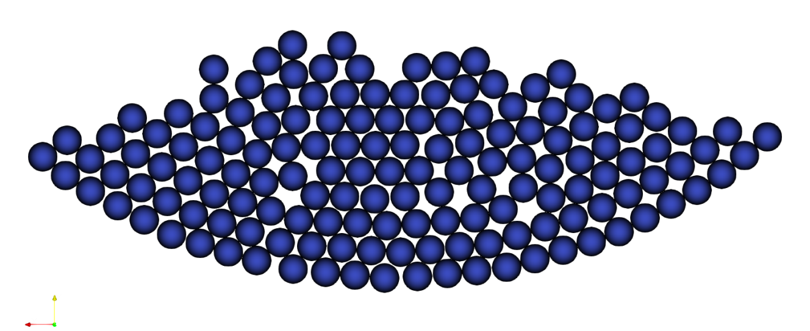

Packing in Circle#
This example introduces the concept of parameter files to parametrize Lethe simulations. It is strongly recommended to visit DEM parameters for more detailed information on the concepts and physical meaning of the parameters in the DEM solver of Lethe.
Features#
Solvers:
lethe-particlesTwo-dimensional problem
Displays the selection of models and physical properties
Files Used in This Example#
Parameter file:
examples/dem/2d-packing-in-circle/packing-in-circle.prm
Description of the Case#
In this example, 50 two-dimensional particles are inserted in a circle and accelerate in the direction of gravity. Upon reaching the outer periphery of the circle (the boundary walls of the triangulation), the particle-wall contact stops the particles from leaving the triangulation. Finally a balance forms between the particle-particle and particle-wall contact force and the gravity force. Particles lose kinetic energy (and velocity), get packed on the triangulation boundary, and remain at rest.
Parameter File#
Lethe simulations are controlled by parameter files which possess the extension .prm. This is the default text format of the ParameterHandler class of the deal.ii library from which Lethe derives. For more information on this class, we refer to the deal.II documentation.
Parameter files are made of subsections which describe a portion of the simulation (e.g. physical properties, simulation control). In parameter files, lines starting with # are comments. Parameters are set using the following syntax:
set parameter name = value
The syntax is flexible. Parameters do not need to be specified in a specific order, but only within the subsection in which they belong. For a full list of the parameters within Lethe-DEM, we refer to the DEM parameter page.
To set-up the packing-in-circle case, we first need to establish the triangulation used for the simulation.
Mesh#
The mesh subsection specifies the computational grid:
subsection mesh
set type = dealii
set grid type = hyper_ball
set grid arguments = 0.0, 0.0 : 0.1 : false
set initial refinement = 3
set expand particle-wall contact search = true
end
The type specifies the mesh format used. At the moment, Lethe supports two mesh formats: dealii and gmsh. dealii meshes are in-situ generated meshes for simple geometries. The type of grid generated is specified by the grid type parameters and this grid is parametrized by its grid arguments. We refer to the documentation of the deal.ii GridGenerator for a detailed explanation of the available grids.
Since the domain of the packing-in-circle problem is a circle, we use the hyper_ball as grid_type. The grid arguments of this grid_type determine the position of the center, the radius of the ball (circle), and whether the colorize option is going to be used (true) or not (false). By setting the latter argument to true, each of the boundaries will receive a unique ID. The IDs will be used to set the boundary conditions on specific parts of the boundary of the domain. If the colorize option is set to false, all boundaries would have been given the ID 0. This will constitute the walls of the domain.
The expand particle-wall contact search parameter is a feature that expands the particle-wall contact detection list by including the walls of the neighboring cells. This feature is necessary when the geometry is concave and presents curvature, as is the case of the circle in which the simulation is carried out.
The last parameter is the initial refinement of the grid. Most deal.ii grid generators contain a minimal number of cells. Indicating an initial refinement=3 implies that the initial mesh is refined 3 times. Each refinement corresponds to dividing the cell element into two for each dimension, i.e, in 2D, each cell is divided into 4 per refinement.
Note
The computational complexity of the functions in Lethe-DEM is either a function of the number of particles or a function of the number of cells. As the number of refinement increases, the number of cells in the triangulation increases, while the number of particles in each cell decreases. This is in favor of particle-based functions (such as fine search), whereas cell-based functions (such as sorting particles in the cells) become more computationally expensive. Hence, we recommend the users choose an initial refinement to reach an average cell size equal to 3-4 times the particle diameter.
Insertion Info#
The insertion info subsection manages the insertion of particles.
subsection insertion info
set insertion method = volume
set inserted number of particles at each time step = 50
set insertion frequency = 1000000
set insertion box points coordinates = -0.05, 0 : 0.05, 0.07
set insertion distance threshold = 2
set insertion maximum offset = 0.75
set insertion prn seed = 19
end
First, the insertion method is selected. In volume insertion, the particles are inserted in an insertion box. The inserted number of particles at each time step specifies the desired number of particles to be inserted at each insertion step.
Note
If the insertion box is not adequately large to insert inserted number of particles at each time step particles with the defined arrangement (initial distance between the inserted particles), Lethe prints a warning and inserts the maximum number of particles that fit inside the insertion box at each insertion step.
insertion frequency specifies the frequency of insertion steps. For example, if we set insertion frequency = 1000, steps 0, 1000, 2000, 3000, … will be defined as insertion iterations.
Note
We recommend that the defined insertion box have at least a distance of \({d^{max}_p}\) (maximum diameter of particles) from the triangulation boundaries. Otherwise, particles may be inserted with an overlap with the triangulation walls.
insertion distance threshold specifies the initial distance between inserted particles. A random number is added to this initial position in every direction to generate randomness in the particles. The random numbers are generated in the range [0 - insertion maximum offset], and from a seed of insertion prn seed.
Lagrangian Physical Properties#
The gravitational acceleration as well as the physical properties of particles and walls are specified in the lagrangian physical properties subsection. These properties include particle diameter and density, Young’s modulus, Poisson’s ratio, restitution coefficient and friction coefficients.
subsection lagrangian physical properties
set g = 0.0, -9.81
set number of particle types = 1
subsection particle type 0
set size distribution type = uniform
set diameter = 0.005
set number of particles = 150
set density particles = 2000
set young modulus particles = 100000000
set poisson ratio particles = 0.3
set restitution coefficient particles = 0.9
set friction coefficient particles = 0.3
end
set young modulus wall = 100000000
set poisson ratio wall = 0.3
set restitution coefficient wall = 0.9
set friction coefficient wall = 0.3
end
First, gravitational acceleration is defined. The number of particle types parameter specifies the number of particle types in a simulation. Particles with different sizes, size distributions, and physical properties have to be defined as separate particle types. The size distribution type parameter specifies the size distribution for each particle type. Since this simulation is monodispersed, the size distribution type is uniform. The diameter and density of particles, number of particles of each type, young modulus, poisson ratio, restitution coefficient and friction coefficient are defined.
Model Parameters#
In the model parameters subsection, DEM simulation parameters are defined.
subsection model parameters
subsection contact detection
set contact detection method = dynamic
set dynamic contact search size coefficient = 0.7
set neighborhood threshold = 1.3
end
set particle particle contact force method = hertz_mindlin_limit_overlap
set particle wall contact force method = nonlinear
set integration method = velocity_verlet
set rolling resistance torque method = constant
end
These parameters include contact detection method and the dynamic contact search size coefficient, neighborhood threshold (which defines the contact neighbor list size: neighborhood threshold * particle diameter), particle particle contact force method, particle wall contact force method and integration method. All the concepts, models, and choices are explained in DEM parameters.
By setting contact detection method = dynamic, the contact lists is automatically rebuilt. In this mode, Lethe stores the displacements of each particle in the simulation since the last contact detection. If the maximum displacement of a particle exceeds the smallest contact search criterion, then the contact list is rebuilt during the time step. The smallest contact search criterion is the minimum of the smallest cell size in the triangulation or the radius of the spherical region in the fine search and it is defined as:
where \({\phi}\), \({d_c^{min}}\), \({r_p^{max}}\), \({\epsilon}\), and \({\alpha}\) denote smallest contact search criterion, minimum cell size (in the triangulation), maximum particle radius (in polydisperse simulations), dynamic contact search size coefficient, and neighborhood threshold.
dynamic contact search size coefficient, as illustrated in the equation above, is a safety factor to ensure that late detection of particles contact will not occur in simulations where the contact detection method is set to dynamic . Its value should be defined generally in the range of 0.5-0.9.
Simulation Control#
The last subsection, which is generally the one we put at the top of the parameter files, is the simulation control . time step, end time, log and output frequency are defined here. Additionally, users can specify the output folder for the simulation results in this subsection. The log frequency parameter controls the frequency at which the iteration number is printed on the terminal. If log frequency = 1000 the iteration number will be printed out every 1000 iterations. This is an easy way to monitor the progress of the simulation.
subsection simulation control
set time step = 5e-5
set time end = 3
set log frequency = 2000
set output frequency = 2000
end
Running the Simulation#
Launching the simulation is as simple as specifying the executable name and the parameter file. Assuming that the lethe-particles executable is within your path, the simulation can be launched by typing:
Lethe will generate a number of files. The most important one bears the extension .pvd. It can be read by popular visualization programs such as Paraview.
Note
The vtu files generated by Lethe are compressed archives. Consequently, they cannot be postprocessed directly. Although they can be easily post-processed using Paraview, it is sometimes necessary to be able to work with the raw data. The python library PyVista allows us to do this.
Results#
Packed particles at the end of simulation:
